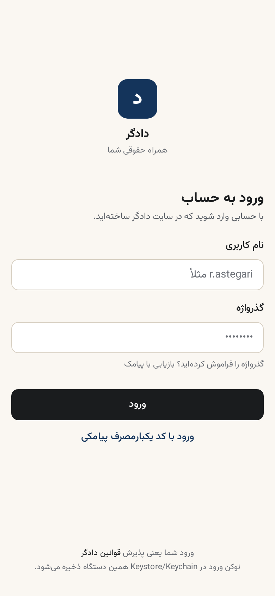

اصل شما: «امکانات کامل باید روی داشبورد و توی صفحهی ورود باشد؛ لاگینکردن یا نکردن، تعیینکنندهی دیدهشدن امکانات نیست.» در این بازطراحی، صفحهی ورود از یک فرم خشک به ویترین شش قابلیت + نمونهی زندهی مسیر پرونده + فرم ورود تبدیل شد. داشبورد (home-v2، تاییدشده در CMD-038) هم همین شش قابلیت را در دسترس عملی میگذارد — جدول نگاشت پایین صفحه.

| امکان | در صفحهی ورود (قبل از لاگین) | در داشبورد home-v2 (بعد از لاگین) | تب مرتبط |
|---|---|---|---|
| پیگیری زندهی پرونده | کاشی ۱ + نمونهی مسیر پرونده | کارت قهرمان جلسه + مسیر پرونده + «پروندههای من» | پروندهها |
| گفتگو با وکیل | کاشی ۲ | کارت «وکیل شما» + دکمهی پیام | — (از خانه) |
| رزرو نوبت | کاشی ۳ | اقدام فوری «رزرو نوبت» | نوبت |
| گاوصندوق اسناد | کاشی ۴ | اقدام فوری «ارسال سند» | — (از خانه) |
| فاکتور و پرداخت | کاشی ۵ | اقدام فوری «پرداخت» + ردیف مالی | فاکتور |
| اعلان جلسات | کاشی ۶ | نقطهی اعلان روی زنگ بالا | — (سراسری) |